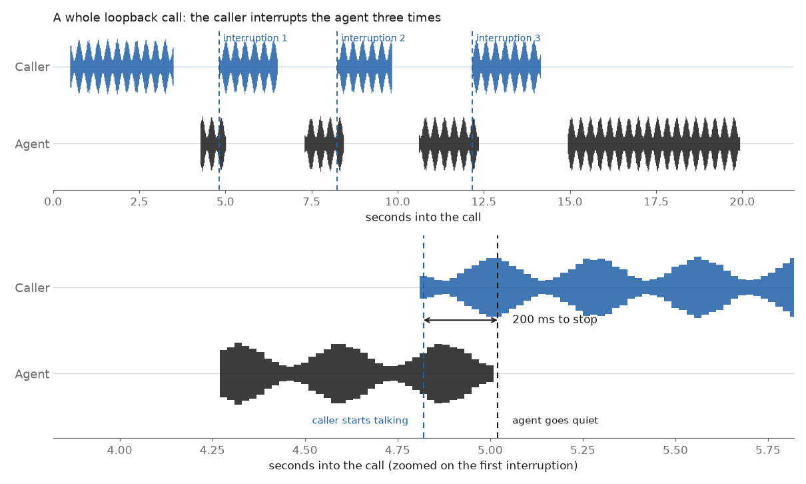
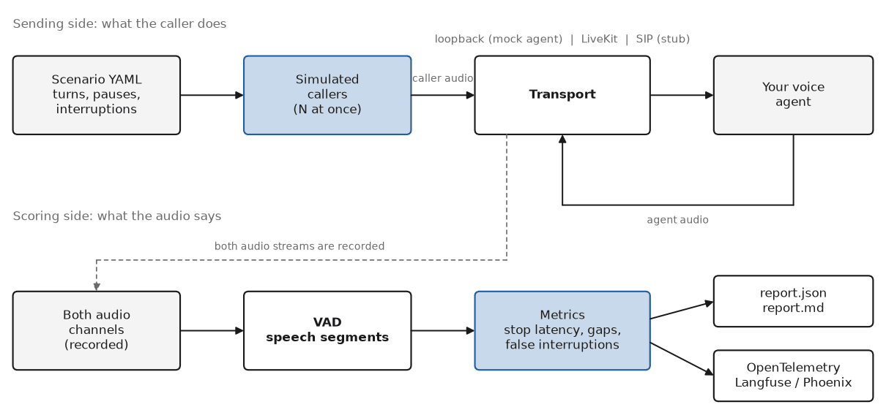
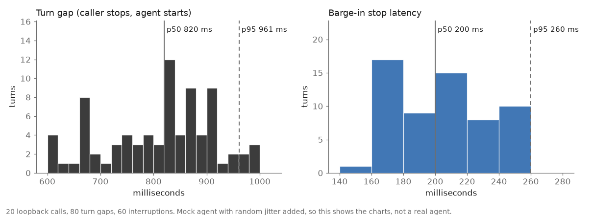
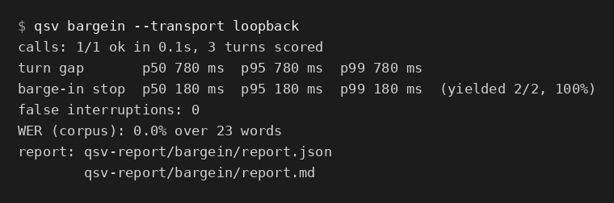
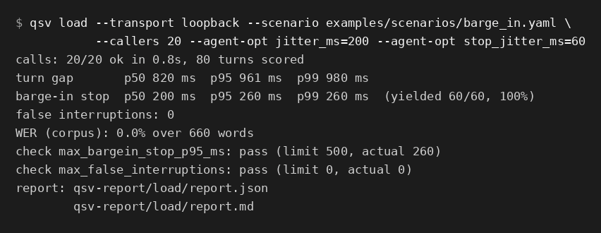

Barge-in stop latency
Time from the caller starting to speak until the agent's audio stops.
A command line tool for testing voice agents
voice-eval-toolkit places scripted test calls to your voice agent, listens to both sides of the audio, and tells you how long the agent took to stop talking, how often it cut the caller off, and how long the caller waited for an answer.
It is a Python command line tool called qsv. It is for people who build voice agents and want numbers instead of "it felt fine on my call".

Time from the caller starting to speak until the agent's audio stops.
Times the agent started talking before the caller had finished.
Time from the caller finishing a sentence until the agent starts to answer.
The usual percentiles over every turn in a run.
How well the agent's own transcript matches what the caller said, at 8 kHz. This needs an agent that publishes its transcripts.
All timings come from the recorded audio, using voice activity detection on both channels. The agent is treated as a black box, so the same scoring works for any stack.
Voice agents often keep talking after the caller starts speaking. Some answer too slowly, and some jump in while the caller is still thinking.
These problems are hard to spot by calling your own agent a few times. They are even harder to check when many people call at once.
You describe a call in a short YAML file: what the caller says, when it pauses, and when it interrupts. The tool starts as many simulated callers as you ask for and sends their audio to your agent. It records what comes back and scores it.


git clone https://github.com/AQIB-NAWAB/voice-eval-toolkit
cd voice-eval-toolkit
python -m venv .venv && source .venv/bin/activate
pip install -e ".[dev]"
# one call, interrupting the agent, against the built-in mock agent
qsv bargein --transport loopback
# twenty callers at once
qsv load --transport loopback \
--scenario examples/scenarios/barge_in.yaml --callers 20Each run writes report.json and report.md. You can also set pass or fail limits, so a slow agent fails your CI build.


telephony-wer-bench is a sibling project. It measures how well streaming speech-to-text hears phone audio: word error rate, time to first partial and final latency under G.711, packet loss and noise. This toolkit tests how the agent behaves in a call. That one tests how well the speech-to-text stage hears it.
Early. It works and has tests, but it has only been run against the bundled mock agent and a local LiveKit server. Open source, MIT license. Issues and pull requests are welcome.